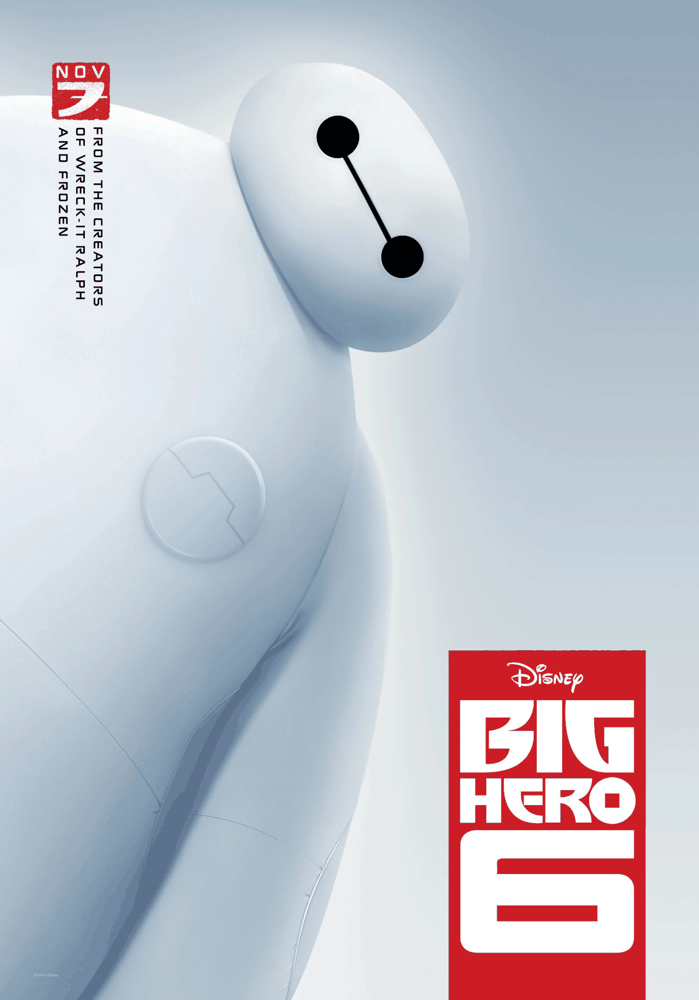

(all within a fantasy-type theme)
Fantasy Genre
The fantasy genre is defined by both circumstances and setting inside a fictional universe with an unrealistic set of natural laws. The possibilities of fantasy are nearly endless, but the movies will often be inspired by or incorporate human myths.
An untethering from reality.
Common conventions of fantasy
Good vs. evil
The heroic (or villainous) quest for power or knowledge
Tradition vs. change
The individual vs. society
Man vs. nature.
Man vs. himself.
Coming of age
Love
Betrayal
Epic journey
The unlikely and/or reluctant hero
Adventure
Elements i want to contribute to this is the idea of change and breaking free from such path.
I want to use a mix of fantasy, Nature and some slight sci-fi elements with the use of a robot, protagonist.

Big Hero 6 (2014)
Directors: Don Hall, Chris Williams
Art Director: Scott Watanabe
Box office: $657.8 million
My Notes
This movie has elements of sacrifice, as in the final shot Baymax (the robot) makes the decision to sacrifice himself to save Hiro and Abigail (the daughter of the main antagonist, and his leading force to act unjustly. out of revenge and grief)
Big hero six also has elements of changing fate, as Hero with a change, goes on a new mission, using his knowledge for more than just robot battles, and uses them to help people just as his brother aimed to.
Other key elements is the use of robotics and technology and evil controlling them. As those robots act in which programmed to do so, and their actions done from evil, are directed by a person rather than by themselves.

Resilience | Animated Short | CalArts Film
(13 May 2023)
https://youtu.be/F1QRZki3zb8?si=jI-][XiyF5bRi1x90n
Director: Yunie Choi
Sound designer, Mixer: Chanmi Ro
Mixer: Daniel Eaton
Composer: Fabrizio Aiello
"Resilience is about the ravaged nature finding its strength and gradually recovering alongside the vibrant resurgence of life."
My notes
The use of color, and nature.
This piece in particular uses nature and the visuals of decay to life, a key element I want to contribute to my work, as the contrast between life and death is elements, combined with the use of dull colours vs bright greens, and yellows.
the short can be seen as a process from pain and destruction, towards rebirth, giving life another chance.
the use of colours as well as keeping the character in the same place to further showcase that change and development over time having the colours gradually change from the dark reds to a fuller colour and slowly lighting up towards the bright greens and yellows displayed in the finale can be used as a display of Rebirth.


The Wild Robot.
In Theatres September 20 2024
Directed: Chris Sanders
Cast and Crew link: https://www.imdb.com/title/tt29623480/fullcredits/?ref_=tt_cl_sm .
My notes
Audience reception:
The Wild Robot book has a rating between 4.7-5 stars and is the well-beloved book for a younger audience.
structured as a Fantasy type genre, as the robot is in an attempt to fit in.
how I am inspired by and how it will be used in my media:
This trailer is for a movie determined to come out around September It is an adaptation of a book called "The Wild Robot" by Peter Brown, Originally published: 5 April 2016
This trailer is full of a mix of animal fantasy and Sci-Fi, aspects as the robot travels this new world trying to find where it fits in.
This book and trailer in particular holds very similar elements (robots and nature) and Fantasy elements.

The Iron Giant (1999)
Directed by Brad Bird
Screenplay by Tim McCanlies
Story by Brad Bird
Based on The Iron Man by Ted Hughes
Produced by Allison Abbate and Des McAnuff
Art director: Alan Bodner
"Set during the Cold War in 1957, the film centers on a young boy named Hogarth Hughes, who discovers and befriends a giant alien robot. With the help of a beatnik artist named Dean McCoppin, Hogarth attempts to prevent the U.S. military and Kent Mansley, a paranoid federal agent, from finding and destroying the Giant."
My Notes
Audience reception:
IMDb- 8.1/10 Metacritic - 85% Rotten Tomatoes - 96%
A 2D animation that contains themes of peace, friendship, death, and sacrifice.
how I am inspired by and how it will be used in my media:
The robot, in its fight to be something different, not follow in the path it was granted, in an attempt to protect life at the detriment of itself.
Elements of change and growth, while also the hardships that come from going aigainst ones own programming.
Two key elements of this film if particular, is the use of a robot and how expressions are posed, as the robot is able to display, feelings without exaugurated expressions. The other aspect being the plotline structure, something out of sci-fi and fantasy, in the venture that the robot ultimately was unable to escape, as his programming and purpose overshadowed and changed, but its fate was left to it, being able to make its final stand against what those believed it to be.
the robot began out with its mission, meeting a boy, where it chose a different path, while being hunted down. the robot spent a long time running, not following its own programming, eventually the military, paranoid agent sent a missile right for them all and the robot, the robot made a choice to show everything that it was not what they made it out to be, and flew the missile away, being blown up in the process, all for its fight against the perception everyone held, because of a predetermined path it chose to diverge from.
Key elements displayed in all of these are nature, life, peace, and Sacrifice. All are used to display the value of life and change/Making a change whether that be to themselves or to others.
all with a mix of Natural Fantasy and Sci-fi.
Mostly though the use of non human charaters while still having the contrast of elements from the natural world.
Conventions

MEDIA requirements
DELETE THIS BEFORE YOU SUBMIT YOUR GOOGLE SITE
1. Identify the genre or genres that your product is best suited to. Be as specific as possible - this should be limited to ONE in order to streamline your analysis, but two may be discussed if you are exploring a hybrid genre (eg. horror surrealism). If you are unsure, discuss with the teacher.
2. Consume as many examples of your chosen genre(s) as you can.
3. Identify all conventions of each genre that you will include in your own production design.
For each:
○ Include each generic convention in your Google Site with an image, video or audio link and label their sources.
○ Analyse how you would use the convention to engage audiences
○ Analyse how audiences would use the convention to read meaning
○ Evaluate how you could incorporate each convention in your own production design
4. If you plan to subvert (mess with) or hybridise (merge together) genres, explain what you plan to do.
○ Analyse how audiences would be engaged by the use of the subverted or hybridised genre in question
○ Analyse how audiences would use the subverted or hybridised genre in question to read your media product
Remember to cite each source (title, artist, link, date accessed)